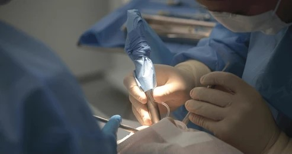

At our dental studios, our in house oral surgery team specializes in providing comprehensive surgical care to restore your oral health, function, and aesthetics in a safe, comfortable environment. We address a wide range of complex dental needs from routine and wisdom tooth extractions to advanced implant placement and bone grafting using state of the art techniques designed for minimal downtime. Understanding that oral surgery can cause apprehension, our expert team prioritizes your comfort, offering sedation options for nervous patients and ensuring every procedure is explained in clear, transparent terms. Whether you require the removal of impacted teeth, treatment for dental infections, or soft tissue management, we are committed to achieving the best possible outcome for your long-term dental health.

At the dental studios, our experienced team delivers highly specialized surgical care, carefully diagnosing and skillfully treating conditions of the teeth, gums, jaw bones and supporting structures that go beyond standard routine dental treatments, ensuring the best possible outcomes for every patient.